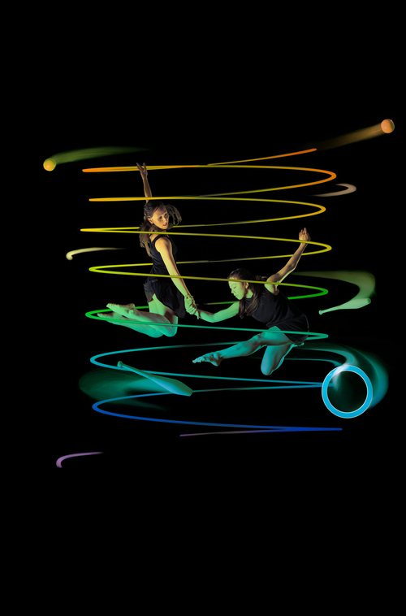
Spring. Spring is a collaboration between Gandini Juggling and Alexander Whitley Dance company.
I'm a juggler in this cross art form piece. It is full of colors and embraces deconstructed rhythms and
jubilant patterning.
It has been premiered in Jan 2018.
Watch the Trailer !
and find out more
Here!
Kim Huynh
Jonglage - Danse
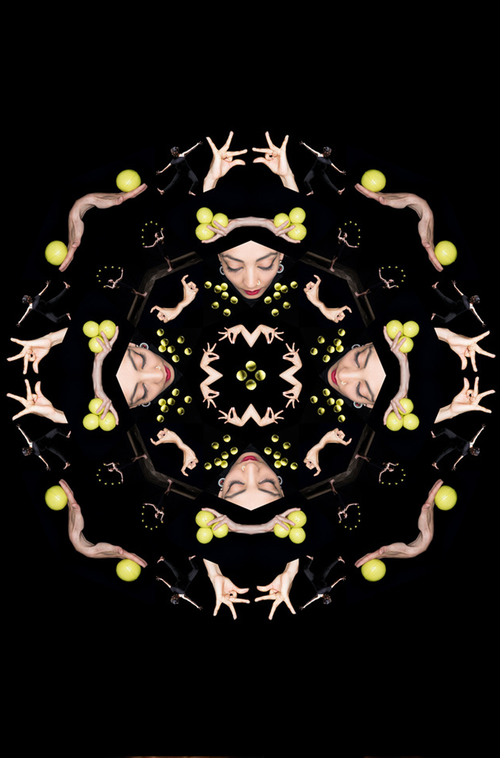
Sigma. I'm a juggler in this piece for two dancers and two jugglers.It is a flirtation
between Bharatanatyam Indian dance and Juggling.
It has been premiered in August 2017 at the Edinburgh Fringe Festival. Awards :
TOTAL THEATRE AWARD FOR VISUAL THEATRE &
ASIAN ARTS AWARD FOR BEST DIRECTING
Here's the Trailer !
Or find out more
Here!
Sigma
Gandini Juggling
 In 2009 I founded the company
Sens Dessus Dessous
with Jive Faury and since then work with him on choreographed juggling/circus.
(Dis)-cordes, a piece for 7 artists and 999m of rope, is our latest creation.
Premiered in dec 2015, it is currently touring. Watch the
trailer!
In 2009 I founded the company
Sens Dessus Dessous
with Jive Faury and since then work with him on choreographed juggling/circus.
(Dis)-cordes, a piece for 7 artists and 999m of rope, is our latest creation.
Premiered in dec 2015, it is currently touring. Watch the
trailer!
(Dis)-cordes
Cie Sens Dessus Dessous
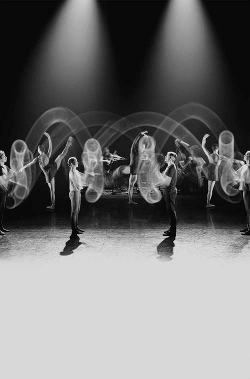
I am currently performing in the show 4x4 Ephemeral Architectures by Gandini Juggling, a collaboration
between two worlds:
ballet and juggling. The show premiered at the 2015 London International Mime Festival at the Royal Opera
House.
Find out more at
Gandini
Juggling.
4x4 Ephemeral Architectures
Gandini Juggling
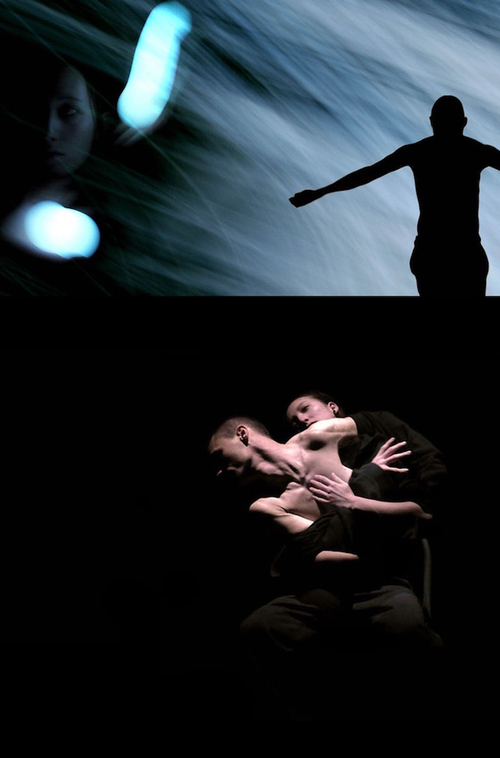
In March 2010 I joined the company 14:20 , which
initiated a movement called "Magie nouvelle". I
interpreted the pieces Etoiles, Notte, Vibrations
and Constellations. Etoiles and Constellations
are still being performed occasionally. Find out more about Notte
in this PDF (french)
or watch the trailer of Notte.
Notte
Cie 14:20 - Magie Nouvelle
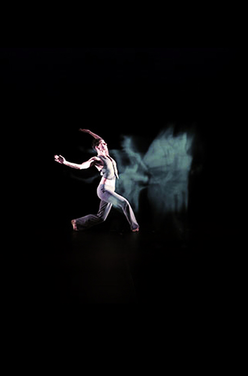
Since 2011 I have been alternating roles with Etienne Saglio to perform in the piece "Vibrations"
( Cie 14:20).
It questions in a magical way the body, time and space at the border of the impossible.
Watch the trailer HERE !
Vibrations
Cie 14:20 - Magie Nouvelle
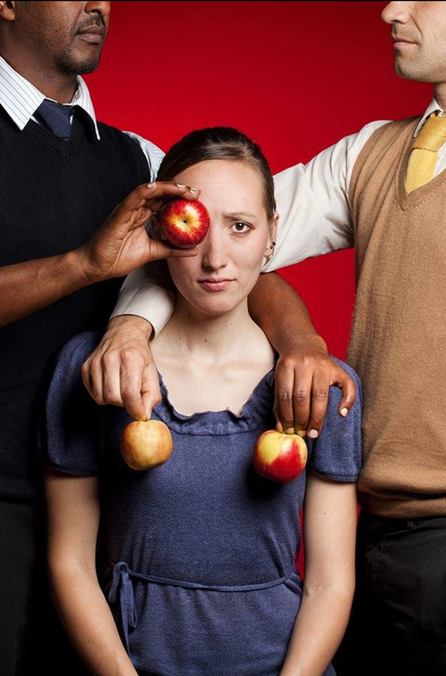
Smashed - a show inspired by the work of Pina Bausch. A mix of juggling and theater
or ... the dark art of juggling! I am part of the original cast and touring with
this show since 2010. In 2017, it has been performed nearly 600 times around the globe.
Find out more at
Gandini Juggling.
Smashed
Gandini Juggling
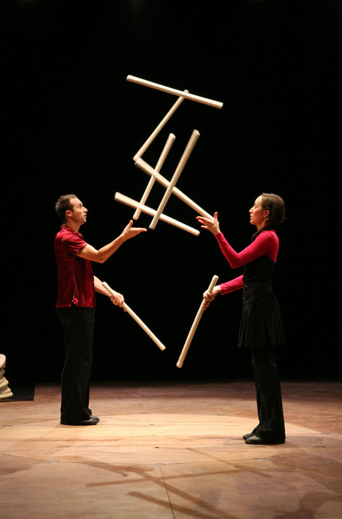
Linéa was the first creation of
Cie Sens Dessus Dessous,
the company I founded together with Jive Faury.
It's a show for two dancing jugglers and 100m of rope.
Since 2011 it has been touring all around the world with more than 250 performances,
in more than 30 countries. The last performances took place in Gap in may 2017.
Find out more
here or watch the trailer
!
Linéa
Cie Sens Dessus Dessous
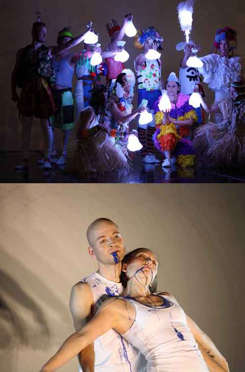
Blotched , juggling in the world of high fashion.
In 2011 I performed in this colorful and experimental show by
Gandini Juggling.
It was shown at the National Theater in London during the
Watch this Space festival.
Blotched
Gandini Juggling
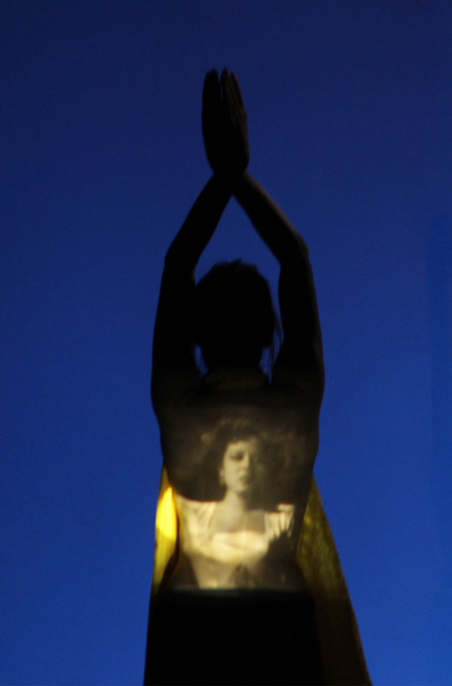
Chinoiseries, A Fictitious Imagining of China.
In 2012, I performed in this piece comissioned by the National Center for
Circus Arts in Cherbourg- Octeville, France. The piece questioned translations, falsification,
and imposture, and more specifically the myths surrounding Chinese circus performers
and the Japanese film China Nights.
Gandini Juggling.
Chinoiseries
Gandini Juggling
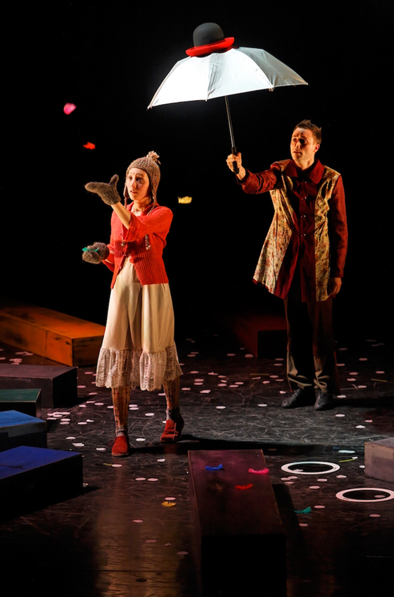
In March 2005, I joined the Company
Jérôme Thomas for the creation of the juggling ballet Rain/Bow that has been performed more than
100 times between 2006 and 2008 in France and abroad. You can find more pictures and a video extract HERE
Rain/Bow
Cie Jérôme Thomas
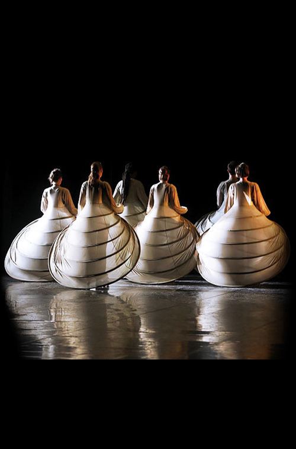
In 2008 I performed in Jérôme Thomas' creation Libellule et Papillons, a visual fantasy, entirely on
roller skates.
It merged several arts : acrobatic skating, stils, dance, mime...
You can find more pictures and a video extract HERE
Libellule et Papillons
Cie Jérôme Thomas
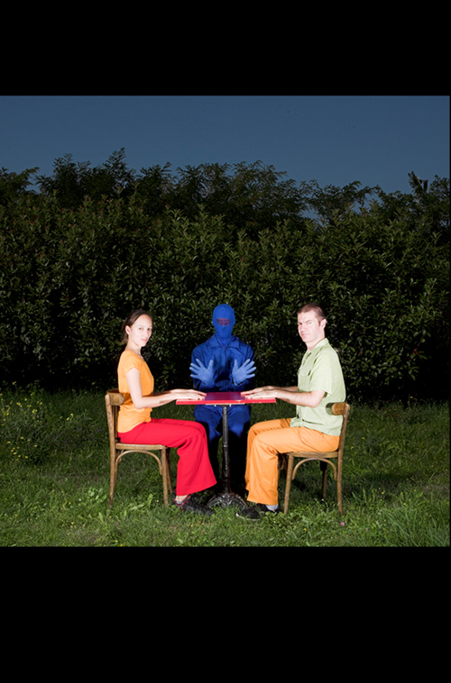
I was part of the collective Bicubic, together with Antek Klemm and J-F Valentin.
The project merged juggling, object manipulation and numeric arts. The resulting show,
also called Bicubic, was premiered at the festival Jonglissimo
in Reims in 2008.
Bicubic
365 Homes
365 Homes is a photo project that I started in 2011. Being on tour with different shows, I spend a great part of my time away from home, on the road, on planes, in trains and ... in HOTELS! This photographic project is a reflection on my many homes over the last few years: I enter them, I step through, and the next day a new home is waiting for me. Each image shows the door of my room followed by the window view."365 Homes" is far from being completed, I constantly update it, so don't hesitate to visit again !
See more photos HERE.

Pittsburgh, USA, Nov 2017

Lubango, Angola, Nov 2011